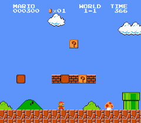

Big Data & Quantum Mechanics#
Overview of Medford Group research#

About Prof. AJ Medford#
Started as a professor (and this VIP course) in Spring 2017.
Experience in developing and contributing to several open-source software packages (CatMAP, ElectroLens, TAPSolver, SPARC, AMPTorch)
Instructor for “Data Analytics for Chemical Engineers” and Numerical Methods.
Interest in applying data science techniques to problems in quantum chemistry and physics.
Introductions#
We will go around the class and introduce ourselves to the everyone. When it is your turn to speak, tell everyone your preferred name, major, and something random about yourself.
How does VIP work?#
The premise of VIP is teams working on projects. Much like a real-world engineering team, individual members work on different aspects of the project. Team members range from sophomores through graduate students, from first-time participants to students who have been involved for four or more semesters. Some students take the course for one credit, and others take it for two credits; naturally, the bar will be higher for those taking it for two credits.
How is VIP graded?#
You will receive a grade for the course based on three criteria:
Documentation (33.3%): Based on biweekly updates of progress on tasks.
Personal Accomplishments (33.3%): Based on how well you achieve your research goals. This is discussed below for the DFT reproduction project.
Teamwork and Participation (33.3%): Peer evaluations will be used to establish how well you work on a team.
Grading process:
Bi-weekly on Wednesday: Submit “bi-weekly update” and literature review to Canvas. Complete peer grading (instructions in syllabus).
Midterm: Submit personal accomplishment documentation to Canvas. Complete peer evaluations. Complete peer grading. Note for returning students This grade will NOT be counted towards your final grade in the course. This grade is advisory only.
Final: Identical to midterm. Final letter grade will be determined only from your final submission.
The following deliverables are expected at the midterm and final evaluations. Note that the “personal accomplishment” documentation will be graded using a combination of peer grading and instructor grading, so you will also need to complete the peer grading at each point.
Deliverables:
Compiled bi-weekly update
Personal accomplishment documentation
Peer grading
Peer evaluation
Demonstrated completion of all assigned training materials
See syllabus for more details.
VIP is not like a regular course#
Regular courses have a clear direction:

VIP lets you choose your own adventure:

Group Communication:#
Slack group used for all communication, join using this link. Use your GT credentials to login and search for “Big Data & Quantum Mechanics (VIP)”
training: discussion related to training project.
general: channel for general discussions with the whole group.
Overarching Project: ChatDFT development#
As returning students will know, we have been working on seeing how large-language models (LLMs) can help students learn to use DFT simulations. We had developed some tools specifically for this, but unfortunately due to technical difficulties they are not available this semester. Instead, we will use this semester as a “control group”, where you can use any openly-available LLMs to help you run the DFT simulations you will work on.
All subteams will also work with the SPARC DFT code, a recent DFT package developed by Prof. Suryanarayana at Georgia Tech, designed for massively parallel calculations. This code is very powerful, but relatively new, and thus not as familiar for LLM tools. We hope that through this project we can help tailor an LLM interface that allows new users to quickly learn to use SPARC to perform reliable calculations.
Team Structure : New Students#
All new undergraduate students will automatically join the training subteam:
Training (led by Todd Whittaker and Seongun Yun) - All new undergraduate students must complete a training program that involves the basics of high-performance computing, common quantum-mechanical techniques such as Density Function Theory (DFT), and the development and use of machine learning techniques such as neural networks. DFT software packages are well-established, but require the use of supercomputing resources and must be converged with respect to several numerical parameters. The training will cover approximately 10 weeks and is highly represnetative of training programs for new graduate students in this field.
Team Structure: Returning Students, OMSCS Students, post Training New Students#
Returning students will work on the DFT reproduction assignment described here under the guidance of an assigned graduate student mentor (Sayan Bhowmik, Neung-Kyung Yu or AJ Medford), and OMSCS students can decide whether to complete the training exercises or join a sub-team (or both).
Each student should work independently on their “Achievements”, but should discuss regularly with other students and instructors during meetings.
Students should regularly communicate with their sub-team to (1) coordinate progress on individual tasks to work toward the larger goal of the team, (2) ask for and provide assistance to other sub-team members, and (3) seek advice from and provide updates to the sub-team graduate mentor.
It is fully expected that the goals of research tasks change throughout the semester. The goals document can be updated at any time up to 2 weeks prior to the end of the semester. Students should revise goals as needed to ensure they are achievable.
Note that the achievements grade is determined by your sub-team advisor. Different advisors may have different expectations and organizational standards. You should be sure to clearly communicate with your subteam advisor to be sure that you are meeting their expectations.
Standard meeting format#
Subsequent meetings will follow one of three formats. We will start each meeting virtually in this Zoom room regardless of the format.
Lecture meetings: The main lecture will be used to briefly discuss logistics before breaking into sub-groups. All training students should plan on attending the training breakout session for discussion regarding that week’s lecture(s), while other subgroups will attend their own breakout rooms. Sub-groups where all (or some) of the students are on campus may elect to meet in person or in a hybrid mode based on the preference of group members.
Update meetings: For midterm and final updates, each team will post a 10-15 minute update presentation to Canvas, and each student will be assigned 3 update presentations to watch and provide peer reviews before class. During the class time, all students are expected to be present, and we will go through each group to field questions and discuss their work. Any remaining time will be used for sub-group meetings.
Workshops: No official lecture topic. The entire lecture will be used as unstructured time to work on projects and interact with mentors and instructors. Training students should use this as an opportunity to join the breakout room of the subteams they are most interested in joining.
Note: If no member of your sub-team is present for the synchronous lecture, then everyone from the group will lose 1/2 point (out of 5) from the teamwork grade. If you cannot attend please coordinate with your group and confirm with an instructor at least 24 hours ahead of time if nobody from your group will be there.
Lecture schedule and syllabus#
The course syllabus is available within this book, and includes a list of all the lecture topics and dates.
Week 1 Assignment#
Join the Slack channel
Start discussion for selecting your group or sub-team project
Install necessary software following instructions below.
Software Installation:#
Install Anaconda3#
We’ll be using Python3 and Jupyter notebooks extenstively in this class. To access this easily, we’ll need to install anaconda3. To do that, go to the anaconda website below and simply follow the buttons to download and install it (ensure that you’re downloading the correct version for your operating system.)
Ensure you can access a linux/unix prompt#
Windows users:#
Please install the windows ubuntu subsystem using these instructions:
Mac users:#
Be sure you can open a terminal